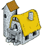
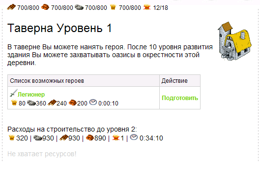
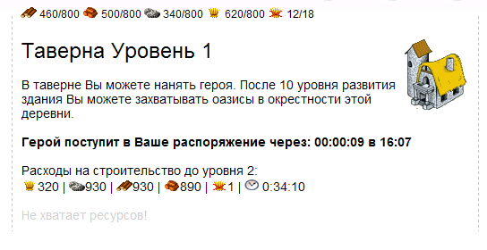
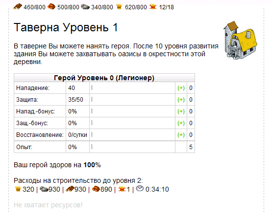
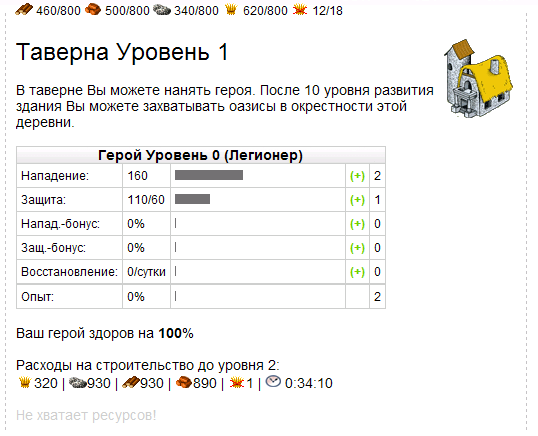
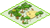
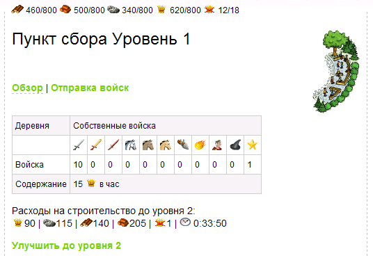
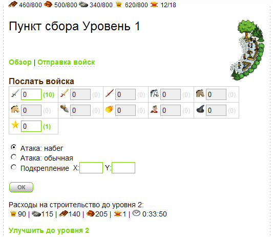
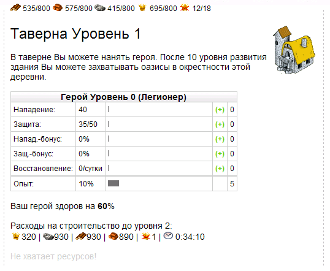
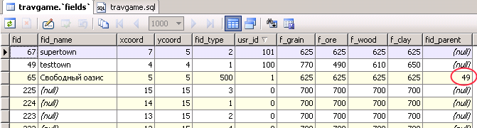

| |
Герои и оазисы
10.1.
Таблица героев
Доброго дня, уважаемый коллега и мы
сегодня приступает к завершающей лекции нашего курса. Настало время
поговорить о героях. Конечно же во всех сражениях есть свои герои и
шанс стать героем есть у каждого, даже самого рядового воина!
Поэтому в нашей игре (как, собственно и в реальной игре
Travian)
герои создаются из обычных регулярных войск. Мы можем создать
героя из солдата легионера или из Кавалериста конницы Цезаря - никто
нам не помешает это сделать. И конечно же делать мы это будем в
Таверне:

Но, для начала, нам с Вами нужно обзавестись таблицей в базе
travgame, где мы будем вести учет всех
героев, если таковые будут создаваться игроками в своих поселках.
Назовем мы эту таблицу heroes.
/*----------- Таблица героев --------------*/
/* будем хранить и очки к параметрам героя и сами парметры */
CREATE TABLE `heroes` (
hr_id bigint(20) unsigned NOT NULL auto_increment, /*ID*/
fid bigint(20), /*откуда? и принадлежность поселку*/
sa_id INT, /* тип героя из spr_army */
sa_attack int, /* атака героя*/
sa_inf_defence int, /* защита от пехоты */
sa_cav_defence int, /* защита от конницы */
hr_attack_bonus int default 0, /* % к атаке всей армии*/
hr_defence_bonus int default 0, /* % к защите всей армии*/
hr_regeneration INT default 0, /* скорость восстановление героя*/
sa_attack_pts int default 0, /* очки к атаке героя*/
sa_defence_pts int default 0, /* очки к любой защита */
hr_attack_bonus_pts int default 0, /* очки к атаке всей армии*/
hr_defence_bonus_pts int default 0, /* очки к защите всей армии*/
hr_regeneration_pts INT default 0, /* очки к скорости восстановление героя*/
hr_points int default 5, /* очки распределения */
hr_start_time bigint DEFAULT 0, /*начало создания/восстановления героя*/
hr_end_time bigint DEFAULT 0, /*начало создания/восстановления героя*/
hr_level int default 0, /* уровень героя */
hr_experience int default 0, /* текущий опыт, за убитых врагов */
hr_state int DEFAULT 1, /* живой ли герой? 1-да, 0-нет*/
hr_health int default 100, /* здоровье героя */
PRIMARY KEY (`hr_id`)
) ENGINE=MyISAM DEFAULT CHARSET=cp1251;
Фрагмент 10.1.1
hr_id - уникальный идентификатор героя в таблице heroes
fid - принадлежность героя к поселку игрока (таблица
fields)
sa_id - тип войска из которого
сделан герой (например - легионер)
sa_attack - сила атаки героя
sa_inf_defence - сила защиты героя от пехоты (можно повышать
в таверне)
sa_cav_defence - сила защиты героя от кавалерии (можно
повышать в таверне)
hr_attack_bonus - бонус к атаке всей армии, в которой
находится герой
hr_defence_bonus - бонус к защите всей армии, в которой
находится герой
hr_regeneration - скорость регенерации здоровья героя
sa_attack_pts - очки,, вложенные в характеристику атаки
sa_defence_pts - очки, вложенные в характеристику
защиты
hr_attack_bonus_pts - очки, вложенные в характеристику бонуса
к атаке всей армии
hr_defence_bonus_pts - очки, вложенные в характеристику
бонуса к защите всей армии
hr_regeneration_pts - очки, вложенные в скорость регенерации
героя
hr_points - нераспределенные очки
hr_start_time - время начала тренировки или восстановления
героя после гибели
hr_end_time - время завершения тренировки или
восстановления героя после гибели
hr_level - уровень героя
hr_experience - текущий опыт героя
hr_state - состояние героя (живой 1-да, 0-нет)
hr_health - % здоровья героя (если 100% - герой полностью
здоров)
Как же герой зарабатывает себе опыт! Все очень просто. Если героя
присоединить к армии, то во время сражения он получает опыт исходя
из формулы: количество убитых врагов армией, в которой состоит герой
умножить на 2. При достижении определенного количества очков опыта,
герой переходит на следующий уровень и ему дается 5 очков для
распределения в характеристики. Кто-то захочет распределить их в
атаку, кто-то в защиту - это уже дело самого игрока.
Кроме выше представленной таблицы у нас с Вами должна быть
справочная таблица по затратам ресурсов и времени на создание или
восстановление героя для разных типов войск. Назовем ее
hero_resurection. Вот она:
-- Стоимость и время создания/восстановления героя определенного типа --
CREATE TABLE `hero_resurection` (
hrs_id bigint(20) unsigned NOT NULL auto_increment, /*ID*/
sa_id bigint(20), /* тип армии */
hrs_level INT, /*уровень этого типа войск*/
hrs_wood INT default 0, /* ресурсы .... */
hrs_clay INT default 0,
hrs_ore INT default 0,
hrs_grain INT default 0,
hrs_training_time CHAR(20), /*время создания/восстановления*/
PRIMARY KEY (`hrs_id`)
) ENGINE=MyISAM DEFAULT CHARSET=cp1251;
Фрагмент 10.1.2
Структура этой таблицы проста и понятна и мы сейчас заполним ее
данными хотя бы частично:
-- добавим в качестве примера по 2 уровня для всех возможных стать героями типов войск
/*легионер*/
insert into hero_resurection(sa_id,hrs_level,hrs_wood,hrs_clay,hrs_ore,hrs_grain,hrs_training_time) values (1,0,240,200,360,80,'0:00:10');
insert into hero_resurection(sa_id,hrs_level,hrs_wood,hrs_clay,hrs_ore,hrs_grain,hrs_training_time) values (1,1,640,550,930,260,'1:46:00');
insert into hero_resurection(sa_id,hrs_level,hrs_wood,hrs_clay,hrs_ore,hrs_grain,hrs_training_time) values (1,2,1100,910,1500,430,'2:40:00');
/*преторианец*/
insert into hero_resurection(sa_id,hrs_level,hrs_wood,hrs_clay,hrs_ore,hrs_grain,hrs_training_time) values (2,0,200,260,320,140,'0:58:40');
insert into hero_resurection(sa_id,hrs_level,hrs_wood,hrs_clay,hrs_ore,hrs_grain,hrs_training_time) values (2,1,550,690,830,400,'1:57:00');
insert into hero_resurection(sa_id,hrs_level,hrs_wood,hrs_clay,hrs_ore,hrs_grain,hrs_training_time) values (2,2,910,1100,1400,670,'2:56:00');
/*Империанец*/
insert into hero_resurection(sa_id,hrs_level,hrs_wood,hrs_clay,hrs_ore,hrs_grain,hrs_training_time) values (3,0,300,320,420,160,'1:04:00');
insert into hero_resurection(sa_id,hrs_level,hrs_wood,hrs_clay,hrs_ore,hrs_grain,hrs_training_time) values (3,1,780,830,1100,450,'2:08:00');
insert into hero_resurection(sa_id,hrs_level,hrs_wood,hrs_clay,hrs_ore,hrs_grain,hrs_training_time) values (3,2,1300,1400,1800,750,'3:12:00');
/*Конница императора*/
insert into hero_resurection(sa_id,hrs_level,hrs_wood,hrs_clay,hrs_ore,hrs_grain,hrs_training_time) values (5,0,1100,880,640,200,'1:28:00');
insert into hero_resurection(sa_id,hrs_level,hrs_wood,hrs_clay,hrs_ore,hrs_grain,hrs_training_time) values (5,1,2700,2200,1600,550,'2:56:00');
insert into hero_resurection(sa_id,hrs_level,hrs_wood,hrs_clay,hrs_ore,hrs_grain,hrs_training_time) values (5,2,4500,3600,2600,910,'4:24:00');
/*Конница Цезаря*/
insert into hero_resurection(sa_id,hrs_level,hrs_wood,hrs_clay,hrs_ore,hrs_grain,hrs_training_time) values (6,0,1100,1300,1600,360,'1:57:20');
insert into hero_resurection(sa_id,hrs_level,hrs_wood,hrs_clay,hrs_ore,hrs_grain,hrs_training_time) values (6,1,2700,3100,3900,930,'3:54:40');
insert into hero_resurection(sa_id,hrs_level,hrs_wood,hrs_clay,hrs_ore,hrs_grain,hrs_training_time) values (6,2,4500,5200,6400,1500,'5:52:00');
Фрагмент 10.1.3
Теперь у нас есть возможность создавать героя из любых доступных
типов войск, к чему мы и приступим в следующем пункте. Но в начале
давайте сделаем функцию проверки, есть ли у нас герой в поселке или
нет?
////// а есть ли герой в поселке? ////////////
function hero_exists( $fid ){
$result = mysql_query("SELECT hr_id from heroes
where fid=$fid" )
or die("Query failed : " . mysql_error());
$num_rows = mysql_num_rows( $result );
return( $num_rows > 0 );
}
Фрагмент 10.1.4
В этой функции мы просто обращаемся к таблице heroes и если в
ней есть данные для героя в указанном поселке (fid), значит вернем
true, иначе - вернем
false. Так как у нас нет героев и потому эта функция будет
возвращать нам false.
10.2.
Таверна 10 уровня
Помнится на прошлых занятиях, когда мы
построили Таверну, то заходя в нее игрок видел лишь унылую надпись
"В настоящий момент в деревне нет воинов, которые могли бы стать
героями". Сейчас мы расширим функционал шаблона
tpl_g37.php, который отвечает за
"вход" в здание Таверны. И это расширения функционала мы опишем в
нескольких фрагментах кода, потому что он довольно объемен. Для
начала мы должны выбрать из кого создавать героя. Согласно нашему
скрипту travgame.sql
у нас в поселке есть легионеры, поэтому, давайте из них и
создавать. В принципе, нет разницы из какого типа войск делать героя
- у игрока должна быть возможность создавать героя из любого типа
войск. Итак, вот фрагмент шаблона tpl_g37.php,
который отвечает за выбор игроком типа войска для тренировки героя:
// Таверна
if( !hero_exists( $fid ) ){
$res = mysql_query("SELECT sa.sa_id, sa_name, sa_image,
hrs_grain, hrs_ore, hrs_wood, hrs_clay, hrs_training_time
from spr_army sa
inner join army ar on ar.sa_id = sa.sa_id
inner join hero_resurection hrs on hrs.sa_id = ar.sa_id
where sr_qty > 0 and sr_enable = 1 and hrs.hrs_level = 0 and fid=$fid" )
or die("Query failed : " . mysql_error());
$num_rows = mysql_num_rows( $res );
if( $num_rows > 0 ){
echo '<table style="border-collapse: collapse;" cellpadding="0" cellspacing="0" id="army"><tr>
<td width="300" class="tabhead">Список возможных героев</td>
<td class="tabhead">Действие</td>
</tr>';
while ($row = mysql_fetch_array( $res )) {
$atype = $row["sa_id"]; // какой тип войска
echo '<tr><td class="armyinfo"><img src="'.$row["sa_image"].'"><a href="#">'.$row["sa_name"].'</a> <br>';
echo '<img src="img/res/grain.png">'.$row["hrs_grain"].' <img src="img/res/ore.png">'.$row["hrs_ore"].' <img src="img/res/wood.png">'.
$row["hrs_wood"].' <img src="img/res/clay.png">'.$row["hrs_clay"].' <img src="img/res/time.png"> '.$row["hrs_training_time"].'</td>';
echo '<td class="armyinfo">';
if( allow_resurect( $fid, $atype ) ){
echo '<a href="#" onClick="do_resurect('.$atype.')">Подготовить</a>';
} else {
echo '<font color="#CCCCCC">Не хватает сырья</font>';
}
echo '</td>';
echo '</tr>';
}
echo '</table>';
echo '<br>';
} else {
echo '<table style="border-collapse: collapse;" cellpadding="0" cellspacing="0" id="army"><tr>
<td width="450" class="tabhead">Герой</td>
<tr>
<td width="450" class="armyinfo"><font color="#CCCCCC">В настоящий момент в деревне нет воинов, которые могли бы стать героями.</font></td>
<tr>
</table>';
}
} else {
// если герой есть - рассмотрим чуть ниже
}
Фрагмент 10.2.1
Как Вы видите из этого фрагмента - в строке 3 мы сразу узнаем, есть
ли герой. Пока его нет и далее в запросе к таблицам army , spr_army
и hero_resurection мы извлекаем данные по войскам, которые
есть у нас в поселке. Для создания героя нужен хотя бы один
представитель какого-либо типа войск. Еще этот запрос возвращает нам
данные по затратам на создание героя 0 уровня по имеющимся в поселке
типам войск. Если у нас есть из кого подготовить героя, мы создаем
ссылку "Подготовить" с вызовом JavaScript
функции do_resurect (строка 26). Если
не из кого - выдаем уже знакомое Вам сообщение - "В настоящий момент в деревне нет воинов, которые могли бы стать героями."
(строка 39). Всю эту информацию мы старательно выводим в виде
HTML таблицы в
окно браузера и получается у нас следующее:

Рисунок 10.2.1
Итак у нас есть легионеры, значит из них и будем создавать нашего
героя в следующем пункте занятия.
10.3.
Тренировка героя
В принципе подготовка героя ничем не должна отличаться от его
восстановления после гибели - те же затраты, которые мы определяем
исходя из уровня героя по таблице hero_resurection. Итак,
игрок нажимает на ссылку "Подготовить" (рисунок 10.2.1) и у нас
срабатывает JavaScript функция
do_resurect,
которая приведена ниже:
// Создаем или восстанавливаем героя
function do_resurect( atype ){
url=window.location.href;
if(url.indexOf('?')!=-1){
newurl = url.split('?')
params = newurl[1];
}
location.href="build.php?"+params+"&hero="+atype;
}
Фрагмент 10.3.1
Эта функция, кроме параметров, которые еже были в адресной
cтроке браузера
и которые она заботливо сохранила в переменной params , передает
также тип войска создаваемого героя в параметре
&hero в файл build.php.
А build.php не долго думая,
обрабатывает эти данные следующим образом:
// задали создание или востановление героя
if( isset( $_GET["hero"] ) ){
init_resurect_hero( $fid, $_GET["hero"] );
}
Фрагмент 10.3.2
В этом фрагменте, при условии передачи параметра
&hero осуществляется вызов PHP
функции init_resurect_hero, которую мы
должны с Вами создать. Вот эта функция:
////////////// Создаем или восстанавливаем героя //////////////////
function init_resurect_hero( $fid, $atype ){
$result = mysql_query("SELECT hr_id, hr_level, hrs_training_time,
hrs_wood, hrs_clay, hrs_ore, hrs_grain,
hr_end_time
from heroes h
inner join hero_resurection hrs on hrs.sa_id=h.sa_id and hrs.hrs_level=h.hr_level
where fid=$fid" )
or die("Query failed : " . mysql_error());
$num_rows = mysql_num_rows( $result );
if( $num_rows > 0 ) { // герой есть и его нужно восстановить
$row = mysql_fetch_array( $result );
$hr_id = $row["hr_id"];
$hrs_wood = $row["hrs_wood"];
$hrs_clay = $row["hrs_clay"];
$hrs_ore = $row["hrs_ore"];
$hrs_grain = $row["hrs_grain"];
$training_time = $row["hrs_training_time"];
$end_time = $row["hr_end_time"]; // а вдруг герой уже создается/восстанавливается?
} else { // героя нет и его нужно создать!
// и попутно узнать характиристики
$result = mysql_query("SELECT hrs_training_time,
hrs_wood, hrs_clay, hrs_ore, hrs_grain,
sa_attack, sa_inf_defence, sa_cav_defence
from hero_resurection hrs
inner join spr_army sa on sa.sa_id=hrs.sa_id
where hrs.sa_id=$atype and hrs.hrs_level=0" )
or die("Query failed : " . mysql_error());
$row = mysql_fetch_array( $result );
$hrs_wood = $row["hrs_wood"];
$hrs_clay = $row["hrs_clay"];
$hrs_ore = $row["hrs_ore"];
$hrs_grain = $row["hrs_grain"];
$training_time = $row["hrs_training_time"];
$sa_attack = $row["sa_attack"];
$sa_inf_defence = $row["sa_inf_defence"];
$sa_cav_defence = $row["sa_cav_defence"];
// создадим героя!
$result = mysql_query( "insert into heroes(fid,sa_id,sa_attack,sa_inf_defence,sa_cav_defence,hr_state)
values($fid,$atype,$sa_attack,$sa_inf_defence,$sa_cav_defence,0)" )
or die("Query failed : " . mysql_error());
$hr_id = mysql_insert_id();
}
// проверим повторный запрос создания/восстановления героя?
$cur_time = time();
if( $cur_time > $end_time ){
// уменьшим ресы у игрока заказавшего создание/восстановление героя
$res = mysql_query("UPDATE fields
set f_wood=f_wood-$hrs_wood, f_clay=f_clay-$hrs_clay,
f_ore=f_ore-$hrs_ore, f_grain=f_grain-$hrs_grain
where fid=$fid" )
or die("Query failed : " . mysql_error());
// Зададим временные точки создания/восстановления героя
$start_time = time();
$end_time = $start_time+h2s( $training_time );
$res = mysql_query("UPDATE heroes
set hr_start_time=$start_time, hr_end_time=$end_time
where hr_id=$hr_id" )
or die("Query failed : " . mysql_error());
}
// теперь остается ждать :)
}
Фрагмент 10.3.3Для упрощения нашей с
Вами задачи, мы будем иметь возможность создавать только одного
героя для поселка. В выше представленном фрагменте в запросе к
таблицам heroes и hero_resurection (строки 3-8) мы
узнаем факт существования героя у нас в поселке. Если запрос вернет
строк больше чем 0 (строка 12) значит герой есть и нужно его
восстановить. Попутно мы сохраняем в переменные все необходимые
данные по затратам на этот процесс ресурсов и времени (строки
13-21).
Если же героя нет (условие в строке 23), мы делаем запрос к таблицам
hero_resurection и spr_army (строки 25-30), чтоб,
кроме ресурсных и временных затрат на подготовку героя (строки
33-37), мы также знали его стартовые характеристики (атака и 2 вида
защиты), которые мы унаследуем от его типа войска. То есть, тренируя
героя из легионера, в качестве базовых мы берем атаку и защиту (от
пехоты и кавалерии) у типа войска- легионер (строки 38-40). Вот для
чего нам нужна была в этом запросе таблица spr_army. В
строках 43-46 мы создаем героя и сохраняем его идентификатор,
который ему присвоился в базе данных в
таблице heroes. Конечно же мы его
создаем со статусом hr_state=0, то есть пока что герой еще не
активен. В строках 50-69 мы уменьшаем количество ресурсов на
величину затрачиваемых на подготовку героя ресурсов и задаем время
начала подготовки и время его окончания. Как Вы видите, ранее у нас
были отдельные таблицы для всякого рода апгрейдов, улучшений и т.д.,
а так как герой у нас один для одного поселка - то можно обойтись
только таблицей heroes (поля hr_start_time
и hr_end_time).
Как водится в этих случаях, игроку неплохо было бы показать, сколько
времени осталось до конца подготовки героя и мы сделаем это в
функции show_resurect_progress. Вот как
выглядит эта функция:
/////////// показывает таймер создания/восстановления героя //////////
function show_resurect_progress( $fid ){
Global $bnum;
$cnt = 0;
$result = mysql_query("SELECT hr_start_time, hr_end_time from heroes
where fid=$fid and hr_state=0" )
or die("Query failed : " . mysql_error());
$num_rows = mysql_num_rows( $result );
if( $num_rows > 0 ){
$script = "";
$row = mysql_fetch_array( $result );
$time_s = $row["hr_start_time"];
$time_e = $row["hr_end_time"];
echo '<b>Герой поступит в Ваше распоряжение через: <span id="restimer'.$cnt.'"></span> в '.date('H:i',$time_e).'</b><br>';
$rest = s2h($time_e-time());
$hms = explode(':', $rest);
$script .= "atimers[$cnt] = [ $hms[0], $hms[1], $hms[2] ]; ";
echo '<script>';
echo 'url_reload = "?bnum='.$bnum.'";';
echo $script;
echo 'updateClock(); setInterval("updateClock()", 1000 );';
echo '</script>';
}
}
Фрагмент 10.3.4Что-то подобное мы уже Вами делали и не раз.
Вот как выглядит результат:

Рисунок 10.3.1
Последнее, что мы должны сделать - отследить, когда наступит
событие завершения подготовки героя и поступление его к нам в
распоряжение. Для этих целей мы сделаем функцию с именем
update_hero_resurect. Ее листинг
представлен чуть ниже:
///////// проверка восстановления героя //////////////
function update_hero_resurect( $fid ){
// что у нас с героем?
$res = mysql_query("SELECT hr_id, hr_start_time, hr_end_time from heroes
where fid=$fid")
or die("Query failed : " . mysql_error());
$num_rows = mysql_num_rows( $res );
if( $num_rows > 0 ){
$cur_time = time();
$row = mysql_fetch_array( $res );
$hr_id = $row["hr_id"];
$time_e = $row["hr_end_time"];
if( $time_e <= $cur_time ){
$result = mysql_query("update heroes
set hr_state=1
where hr_id=$hr_id" )
or die("Query failed : " . mysql_error());
// и кроме этого засунем его в армию
$result = mysql_query("UPDATE army set sr_qty=1 where sa_id=11 and fid=$fid" )
or die("Query failed : " . mysql_error());
}
}
}
Фрагмент 10.3.5
Из запроса к таблице heroes (строки 4-5) мы получаем данные
по времени завершения подготовки героя (если таковой имеется) и если
время завершения меньше текущего - в строках 16-18 мы установим
ему статус hr_state=1 (активен),
а в запросе (строки 21-22) мы добавим его в нашу армию. Но для этого
мы чуть модифицируем SQL процедуру
makearmy, добавив в нее еще одну
строку:
insert into army (sa_id,sr_qty,sr_enable,fid) VALUES (11,0,1,p_fid); /*тип 11-герой (не имеет соотв. в spr_army)*/;
Фрагмент 10.1.2
Теперь нам будет ясно, что если sr_qty для типа войска - sa_id=11
больше нуля, значит в армии есть герой и уже дальше о нем можно
получить информацию из таблицы heroes.
Как Вы помните, в этой таблице heroes
есть множество полей, описывающих нашего героя и теперь нам
необходимо научиться распределять очки в какие-нибудь параметры
героя, чтоб делать его сильнее и полезнее для нашей армии. Сейчас мы
приведем еще одну часть шаблона
tpl_g37.php, которая выведет на
страницу браузера таблицу с характеристиками героя (если герой есть)
и даст возможность распределять имеющиеся очки (hr_points
в таблице heroes ) в нужные
параметры героя.
} else { // герой уже есть!
$result = mysql_query("SELECT sa.sa_name, h.sa_attack, h.sa_inf_defence, h.sa_cav_defence,
hr_attack_bonus, hr_defence_bonus, hr_regeneration, hr_points,
hr_level, hr_experience, hr_state, hr_points, hr_health,
sa_attack_pts, sa_defence_pts, hr_attack_bonus_pts, hr_defence_bonus_pts, hr_regeneration_pts
from heroes h
inner join spr_army sa on sa.sa_id=h.sa_id
where fid=$fid" )
or die("Query failed : " . mysql_error());
$row = mysql_fetch_array( $result );
$sa_name = $row["sa_name"]; // какого типа герой?
$sa_attack = $row["sa_attack"]; // атака
$sa_inf_defence = $row["sa_inf_defence"]; // защита от пехоты
$sa_cav_defence = $row["sa_cav_defence"]; // защита от кавалерии
$hr_attack_bonus = $row["hr_attack_bonus"]; // бонус атаки армии
$hr_defence_bonus = $row["hr_defence_bonus"]; // бонус защиты армии
$hr_regeneration = $row["hr_regeneration"]; // восстановление в сутки
$hr_level = $row["hr_level"]; // уровень героя
$hr_experience = $row["hr_experience"]; // очки опыта
$hr_state = $row["hr_state"]; // жив? 0-нет,1-да
$hr_health = $row["hr_health"]; // здоровье героя
// очки
$hr_points = $row["hr_points"]; // нераспределенные очки
$sa_attack_pts = $row["sa_attack_pts"]; // очки атаки
$sa_defence_pts = $row["sa_defence_pts"]; // очки защиты
$hr_attack_bonus_pts = $row["hr_attack_bonus_pts"]; // очки к бонусу атаки армии
$hr_defence_bonus_pts = $row["hr_defence_bonus_pts"]; // очки к бонусу защиты армии
$hr_regeneration_pts = $row["hr_regeneration_pts"]; // очки к восстановлению в сутки
if( $hr_state == 1 ){
// посчитаем пиксели для progress-bar (168px - max длина)
$sa_attack_pb = 1+(168*($sa_attack_pts-($hr_level*5))*20)/100;
$sa_defence_pb = 1+(168*($sa_defence_pts-($hr_level*5))*20)/100;
$hr_attack_bonus_pb = 1+(168*($hr_attack_bonus_pts-($hr_level*5))*20)/100;
$hr_defence_bonus_pb = 1+(168*($hr_defence_bonus_pts-($hr_level*5))*20)/100;
$hr_regeneration_pb = 1+(168*($hr_regeneration_pts-($hr_level*5))*20)/100;
$exp_pb = 1+168/100*$hr_experience * get_hero_exp_level( $hr_level+1 ) / 100;
?>
<table id="distribution" class="distr" cellpadding="0" cellspacing="0">
<tr>
<td class="trade_bg" colspan="5">Герой Уровень <? echo $hr_level.' ('. $sa_name.')'; ?></span></th>
</tr>
<?
echo '<tr>
<td class="armyinfo">Нападение:</td>
<td class="armyinfo">'.$sa_attack.'</td>
<td class="xp"><img class="bar" src="img/x.gif" style="width:'.$sa_attack_pb.'px;" title="<? echo $sa_attack; ?>" /></td>';
if($hr_points>0)
echo '<td class="armyinfo"><a href="build.php?bnum='.$bnum.'&up=1">(<b>+</b>)</a></td>';
else
echo '<td class="armyinfo"><span class="none">(<b>+</b>)</span></td>';
echo '<td class="armyinfo">'.$sa_attack_pts.'</td>
</tr>
<tr>
<td class="armyinfo">Защита:</td>
<td class="armyinfo">'.$sa_inf_defence."/".$sa_cav_defence.'</td>
<td class="xp"><img class="bar" src="img/x.gif" style="width:'.$sa_defence_pb.'px;" title="" /></td>';
if($hr_points>0)
echo '<td class="armyinfo"><a href="build.php?bnum='.$bnum.'&up=2">(<b>+</b>)</a></td>';
else
echo '<td class="armyinfo"><span class="none">(<b>+</b>)</span></td>';
echo '<td class="armyinfo">'.$sa_defence_pts.'</td>
</tr>
<tr>
<td class="armyinfo">Напад.-бонус:</td>
<td class="armyinfo">'.$hr_attack_bonus.'%</td>
<td class="xp"><img class="bar" src="img/x.gif" style="width:'.$hr_attack_bonus_pb.'px;" title="" /></td>';
if($hr_points>0)
echo '<td class="armyinfo"><a href="build.php?bnum='.$bnum.'&up=3">(<b>+</b>)</a></td>';
else
echo '<td class="armyinfo"><span class="none">(<b>+</b>)</span></td>';
echo '<td class="armyinfo">'.$hr_attack_bonus_pts.'</td>
</tr>
<tr>
<td class="armyinfo">Защ.-бонус:</td>
<td class="armyinfo">'.$hr_defence_bonus.'%</td>
<td class="xp"><img class="bar" src="img/x.gif" style="width:'.$hr_defence_bonus_pb.'px;" title="" /></td>';
if($hr_points>0)
echo '<td class="armyinfo"><a href="build.php?bnum='.$bnum.'&up=4">(<b>+</b>)</a></td>';
else
echo '<td class="armyinfo"><span class="none">(<b>+</b>)</span></td>';
echo '<td class="armyinfo">'.$hr_defence_bonus_pts.'</td>
</tr>
<tr>
<td class="armyinfo">Восстановление:</td>
<td class="armyinfo">'.$hr_regeneration.'/сутки</td>
<td class="xp"><img class="bar" src="img/x.gif" style="width:'.$hr_regeneration_pb.'px;" title="" /></td>';
if($hr_points>0)
echo '<td class="armyinfo"><a href="build.php?bnum='.$bnum.'&up=5">(<b>+</b>)</a></td>';
else
echo '<td class="armyinfo"><span class="none">(<b>+</b>)</span></td>';
echo '<td class="armyinfo">'.$hr_regeneration_pts.'</td>
</tr>
<tr>
<td colspan="5" class="empty"></td>
</tr>
<tr>
<td class="armyinfo" title="до следующего уровня">Опыт:</td>
<td class="armyinfo">'.$hr_experience.'%</td>
<td class="xp"><img class="bar" src="img/x.gif" style="width:'.$exp_pb.'px;" title="" /></td>
<td class="armyinfo"></td>
<td class="armyinfo">'.$hr_points.'</td>
</tr></table>';
echo '<br>Ваш герой здоров на <b>'.$hr_health.'</b>%<br>';
}
}
Фрагмент 10.3.5Этот фрагмент вначале строит запрос к таблицам
heroes и spr_army (строки
3-9) и получает необходимые данные для отображения затем в виде
таблицы, но не просто статичной таблицы, а с управляющими элементами
распределения очков. Эта таблица отображается лишь когда герой есть
и его статус равен 1, то есть герой находится в активном состоянии.
Когда в параметрах героя есть распределенные очки мы показываем эти
измененные параметры в виде progress-bar (типа
полоски для наглядного представления на сколько этот параметр
увеличен и сколько еще его можно увеличивать).
При создании героя 0 уровня ему сразу же дается 5 очков, которые
можно вложить в любые доступные характеристики. В нашей табличке,
видимой в браузере это можно сделать на ссылки (+) возле
соответствующих характеристик. Посмотрите как выглядит результат
работы фрагмента 10.3.5:

Рисунок 10.3.2
Вы видите, что нам доступно 5 очков (справа внизу таблицы) для
распределения в нападение, защиту, бонусы к защите армии, бонусы к
нападению армии или восстановлению героя. Здесь игрок выбирает сам,
что ему важнее.
Давайте теперь нажмем два раза на
(+) напротив характеристики
нападения и один раз напротив защиты. Мы увидим следующую картину:

.Рисунок
10.3.3
Вы видите, что на против измененных
характеристик видны полоски визуализирующие их увеличение,
пропорционально числу 5 - то есть 2/5 и 1/5 соответственно (точно
сколько очком мы вложили в это увеличение). Такой
progress-bar рисуется картинкой серого цвета, причем ширина в
пикселях этой картинки рассчитывается в строках 34-40 фрагмента
10.3.5 (число 168 - это ширина ячейки таблицы, в которой
отрисовывается этот progress-bar)
Еще до распределения очков опыта (рисунок 10.3.2.) мы видим что
нападение нашего героя было - 40, а защита 35/50, затем они поменяли
свои значения. Как Вы заметили из фрагмента 10.3.5, когда игрок
нажимает на (+) , управление переходит
к скрипту build.php, куда, кроме
номера постройки передается еще и параметр &up. Он
варьируется от 1 до 5 и определяет, какую характеристику решил
поднять игрок. Как же обрабатывается это поднятие характеристики.
Смотрите фрагмент шаблона tpl_g37.php,
который обрабатывает эту ситуацию ниже:
// задали поднятие характеристик
if( isset( $_GET["up"] ) ){
add_skill( $fid, $_GET["up"] );
}
Фрагмент 10.3.6Вы видите, что поднятием характеристик занимается
функция add_skill, которая выглядит
следующим образом:
////////// задали поднятие характеристики /////////
function add_skill( $fid, $up ){
// что у нас с героем, жив ли он?
$res = mysql_query("SELECT hr_id, hr_points,
sa.sa_attack, sa.sa_inf_defence, sa.sa_cav_defence,
sa_attack_pts, sa_defence_pts, hr_attack_bonus_pts, hr_defence_bonus_pts, hr_regeneration_pts
from heroes h
inner join spr_army sa on sa.sa_id=h.sa_id
where fid=$fid and hr_state=1")
or die("Query failed : " . mysql_error());
$num_rows = mysql_num_rows( $res );
if( $num_rows > 0 ){
$row = mysql_fetch_array( $res );
$hr_id = $row["hr_id"];
$hr_points = $row["hr_points"];
$sa_attack = $row["sa_attack"];
$sa_inf_defence = $row["sa_inf_defence"];
$sa_cav_defence = $row["sa_cav_defence"];
$sa_attack_pts = $row["sa_attack_pts"]; // очки атаки
$sa_defence_pts = $row["sa_defence_pts"]; // очки защиты
$hr_attack_bonus_pts = $row["hr_attack_bonus_pts"]; // очки к бонусу атаки армии
$hr_defence_bonus_pts = $row["hr_defence_bonus_pts"]; // очки к бонусу защиты армии
$hr_regeneration_pts = $row["hr_regeneration_pts"]; // очки к восстановлению в сутки
if( $hr_points > 0 ){ // есть очки распределения?
if( $up == 1 ) { /// добавляем очки к атаке
$att = Round5((2*$sa_attack/3+27.5) * ($sa_attack_pts+1) + 1.25*$sa_attack);
$res = mysql_query("UPDATE heroes set sa_attack_pts=sa_attack_pts+1,
sa_attack=$att,
hr_points=hr_points-1 where hr_id=$hr_id")
or die("Query failed : " . mysql_error());
}
if( $up == 2 ) { /// добавляем очки к защите
$def_i = Round5((2*$sa_inf_defence/3 + 27.5)* ($sa_defence_pts+1) + 5*$sa_inf_defence/3);
$def_c = Round5((2*$sa_cav_defence/3 + 27.5)* ($sa_defence_pts+1) + 5*$sa_cav_defencec/3);
$res = mysql_query("UPDATE heroes set sa_defence_pts=sa_defence_pts+1,
sa_inf_defence=$def_i,
sa_cav_defence=$def_c,
hr_points=hr_points-1 where hr_id=$hr_id")
or die("Query failed : " . mysql_error());
}
if( $up == 3 ) { /// добавляем очки к бонусу атаки армии
$att_b = $hr_attack_bonus_pts+1;
$res = mysql_query("UPDATE heroes set hr_attack_bonus_pts=hr_attack_bonus_pts+1,
hr_attack_bonus=$att_b,
hr_points=hr_points-1 where hr_id=$hr_id")
or die("Query failed : " . mysql_error());
}
if( $up == 4 ) { /// добавляем очки к бонусу защиты армии
$def_b = $hr_defence_bonus_pts+1;
$res = mysql_query("UPDATE heroes set hr_defence_bonus_pts=hr_defence_bonus_pts+1,
hr_defence_bonus=$def_b,
hr_points=hr_points-1 where hr_id=$hr_id")
or die("Query failed : " . mysql_error());
}
if( $up == 5 ) { /// добавляем очки к регенерации
$regen = ($hr_regeneration_pts+1)*5;
$res = mysql_query("UPDATE heroes set hr_regeneration_pts=hr_regeneration_pts+1,
hr_regeneration=$regen,
hr_points=hr_points-1 where hr_id=$hr_id")
or die("Query failed : " . mysql_error());
}
}
}
}
Фрагмент 10.3.7Здесь мы снова вначале узнаем все параметры из
соединения таблиц heroes и spr_army (SQL
запрос в строках 4-9). Потом, в соответствии с тем, какой
номер задан в аргументе $up, мы поднимаем соответствующую
характеристику. Если $up=1 - значит поднимаем атаку, если $up=2 -
защиту от кавалерии и пехоты и т.д. В большинстве случаев
используются свои формулы для повышения этих характеристик. Так,
например, для атаки формула такова:
A = Округление(
(2*sa_attack/3+27.5) + (sa_attack_pts+1) +
1.25*sa_attack) ).
А - это сила атаки, которую мы рассчитываем
sa_attack - это сила атаки того типа войск, из которого сделан герой
(для легионера, это, к примеру 40)
a_attack_pts - очки, которые в данный момент распределены в эту
характеристику.
Для защиты формула чуть другая, для бонусов формулы совсем простые,
как и для регенерации персонажа. Мы используем эти формула, а Вы
можете придумать другие, главное, чтоб выглядело более-менее
правдоподобно
После расчета по формуле, эта рассчитанная характеристика
сохраняется в таблицу heroes, а от туда уже визуализируется
как на рисунке 10.3.3
В завершении этого пункта мы сделаем простую функцию
get_hero_params, которая будет
возвращать в виде массива все характеристики героя:
/////////// Узнаем характеристики героя /////////////////
/////////// и возвратим их в виде массива ///////////////
function get_hero_params( $fid ){
$res = mysql_query("SELECT hr_id, sa_attack, sa_inf_defence, sa_cav_defence,
hr_attack_bonus, hr_defence_bonus, hr_health, hr_experience
from heroes h
where fid=$fid ")
or die("Query failed : " . mysql_error());
$row = mysql_fetch_array( $res );
$a_hero["hrid"] = $row["hr_id"];
$a_hero["a"] = $row["sa_attack"];
$a_hero["id"] = $row["sa_inf_defence"];
$a_hero["cd"] = $row["sa_cav_defence"];
$a_hero["ab"] = $row["hr_attack_bonus"];
$a_hero["db"] = $row["hr_defence_bonus"];
$a_hero["h"] = $row["hr_health"];
$a_hero["e"] = $row["hr_experience"];
$a_hero["l"] = $row["hr_level"];
return( $a_hero );
}
Фрагмент 10.3.8Тут все просто - все данные (атаку, защиту,
бонусы, здоровье и т.д.) берем из таблицы heroes и
помещаем их в массив $a_hero, который возвращает эта функция.
10.4. Оазисы на
карте
Что ж, наш герой
уже усилен и может приступать к захвату оазисов на карте. Но мы
ранее не позаботились об их создании.
Сделаем это сейчас. Для начала давайте
запасемся картинкой оазиса. Допустим она у нас
будет такой:

Как Вы помните, в нашей с Вами
базу данных в таблице fields есть
поле fid_type, значение в котором влияет
на отображение случайной картинки поля на
глобальной карте мира. Мы можем его использовать также для
определения типа оазиса. Допустим, для оазисов fid_type будет равен
500. Внесем изменения в наш travgame.sql:
-- назначим оазис!
update fields set usr_id = 1, fid_type = 500, fid_name='Свободный оазис' where fid = 65; /* к примеру 500 - это будет оазис*/
Фрагмент 10.4.1В
вышеприведенном фрагменте мы выбрали идентификатор поля fid = 65,
чтоб оазис располагался неподалеку от поселков наших игроков
test и Суперигрок. В фале
fld.php, который мы не трогали очень
давно , сейчас мы вставим пару строк, чтоб на карте отображалась
картинка оазиса:
...
if( $fid_type == 500 ){ // ОАЗИС
echo "<MAP Name='FPMap1$fid'>";
echo "<AREA Shape='Polygon' coords = '$x1,$y1,$x2,$y2,$x3,$y3,$x4,$y4' onmouseover=\"say_owner('".$nick."')\"></MAP>";
echo '<div style="position:absolute;left:'.$x_coord.'px;top:'.$y_coord.'px;width:73px; height:41px; z-index:12;z-index:12">
<IMG SRC="img/fld500.png" border="0" USEMAP="#FPMap1'.$fid.'" ISMAP"></div>';
} else {
...
Фрагмент 10.4.2
Теперь глобальная карта будет выглядеть так:

Рисунок 10.4.1
Герой у нас уже есть, оазис есть и, теперь, мы можем приступать к
захвату оазиса.
.
10.5.
Захват оазиса
Как Вы помните из
прошлой лекции, начало боевых действий начинается с формирования
армии в Пункте Сбора, а так как у нас появился герой, то мы также
должны добавить возможность присоединять героя к нашей армии.
Поэтому нам нужно немного изменить шаблоны
tpl_g16.php и tpl_g16_2.php.
В первом мы добавим еще один столбик в таблицу отображения армии в
поселке и будем заполнять его числом 1, если герой есть или 0, если
героя нет в поселке:

Рисунок 10.5.1
В шаблоне tpl_g16_2.php
мы добавляем текстовое поле для присоединения героя к армии,
которое будет затемненным, если героя нет, и активным, если герой
есть в поселке.

Рисунок 10.5.2
При отправке армии, мы также должны не забыть передать данные из
поля с героем (имя которого получит
следующий порядковый номер -
r11) в функцию
init_send_army в файле tpl_g16.php
иначе, армия так и отправится в поход без своего героя!
Давайте для разминки отправим нашего героя вместе с армией в поход
на поселок Суперигрока, чтоб посмотреть как после битвы изменится
его здоровье в результате гибели части армии. А здоровье героя
напрямую зависит от количества воинов, которые остались в его армии
после сражения. К примеру, в армии было 10 легионеров, а осталось 6,
значит у героя после боя будет 60% здоровья.
Для начала сделаем функцию update_hero_stats,
которая посчитает оставшееся здоровье героя после сражения:
function update_hero_stats( $fid, $qty1, $qty2, $qty3, $qty4 ){
$h_params = get_hero_params( $fid );
$hr_id = $h_params["hrid"];
$hr_level = $h_params["l"];
$health_left = floor($h_params["h"] - (100-$qty2*100/$qty1));
$hr_state = $health_left > 0 ? 1 : 0;
$exp = ($qty3-$qty4)*2 + $h_params["e"];
$res = mysql_query("update heroes set hr_health=$health_left,
hr_state=$hr_state,
hr_experience=hr_experience+$exp
where hr_id=$hr_id")
or die("Query failed : " . mysql_error());
}
Фрагмент 10.5.1Функция update_hero_stats
получает в качестве аргументов - идентификатор поселка, к
которому принадлежит герой, а также значения количества своих и
чужих войск до сражения и после него.
Вначале эта функция узнает параметры героя (строка 3).
Оставшееся здоровье героя мы посчитаем по формуле:
health = health_current - (100 -
qty2*100/qty1), где
health - здоровье после боя,
которое мы пытаемся рассчитать
health_current - здоровье героя до
боя
qty2 - число оставшихся в живых
солдат армии героя
qty1 - число солдат в армии героя
до боя.
В строке 6 фрагмента 10.5.1 мы как раз применяем эту формулу, и если
здоровье героя больше нуля, значит, герой жив и переменную состояния
его активности $hr_state устанавливаем в 1, иначе устанавливаем ее в
0. Опыт, который получает герой после сражения мы вычисляем в строке
8, по формуле, которую описали еще в первом пункте нашей сегодняшней
лекции. Все эти данные заносим в таблицу heroes (строки 9-13)
Функцию update_hero_stats, которую мы
только что сделали мы добавим конечно же в конец функции
generate_battle, расчитывающей
результат сражения, которую мы сделали на прошлом занятии. Таким
образом, сразу после боя мы увидим, зайдя в таверну как изменяются
характеристики героя (опыт и здоровье).
Так вот, если игрок test пошлет в
набег армию вместе с героем на поселок игрока Суперигрок
(вы помните, что у обоих в армии по 10 легионеров), то после боя, в
Таверне мы увидим следующие изменения для героя игрока
test.

Рисунок 10.5.3
Вы, наверно сразу обратили внимание на изменившийся
показатель здоровья (был 100%, а стал 60% - так как в армии осталось
6 легионеров из 10), а также показатель опыта, который стал
10% (5 убитых легионеров врага умножить на 2). Конечно же мы во
время сражения не учитывали еще параметры героя в атаке, чтоб
добавить урон войскам защищающейся стороны. Но Вы сможете сделать
это самостоятельною
Что ж, давайте теперь присоединим оазис
к нашему поселку. Когда наша армия пытается напасть на оазис, в
числе ее должен быть герой, иначе попытка послать туда войска должны
быть безуспешными. Давайте сделаем такую проверку в функции
init_send_army:
$fid_type = get_fid_type( $fid_to ); // что за поле? не оазис ли?
if( ($fid_type == 500) && ($qty11==0) ) {
echo '<font color="#FF0000">Вы пытаетесь захватить оазис без героя! Это не возможно!</font><br>';
return( 0 ) ;
}
Фрагмент 10.5.2
Вы видите, что если тип поля 500 и в армии нет героя ($qty11==0),
значит выдаем сообщении о невозможности этого действия!
Если же герой в армии есть и мы дошли до оазиса, произошло сражение,
если там были войска защитников, то, в том случае, если
обороняющихся войск не осталось, то оазис должен стать закрепленным
за игроком. Для этого мы добавим в конец той же функции
generate_battle следующие строки:
if( ($fid_type == 500) && ($all_def_qty_after==0) ){
// это оазис и атакующая армия его захватила (не осталось защитников!)
$res = mysql_query( "update fields set fid_parent=$fid where fid=$fid_to" )
or die("Query failed : " . mysql_error());
}
Фрагмент 10.5.3
Как вы догадались, если тип поля 500 (оазис) и количество защитников
оставшихся после боя ($all_def_qty_after) равно нулю, значит оазис
стал нашим и мы устанавливаем поле fid_parent в таблице fields
для этого участка карты равным идентификатору поселка игрока его
захватившего.
Таки образом после захвата оазиса игроком test
в таблице fields Вы увидите следующее.

Рисунок 10.5.4
В поле fid_parent таблицы fields
в строке для Свободного оазиса Вы видите число 49, то есть
идентификатор (fid) поселка
testtown, армия которого его захватила.
Для тренировки Вы можете на глобальной карте сделать другую картинку
оазиса, захваченного каким-нибудь игроком. Можете также устроить
сражение между войсками природы (смотрите добавленные типы войск в
скрипте travgame.sql) и
армией захватывающей оазис. Теперь Вы все это и, надеемся, многое
другое можете делать самостоятельно и еще более усовершенствовать
нашу учебную стратегическую игру или даже вообще - создать нечто
совершенно новое!
А мы на этом с Вами прощаемся, до следующих встреч на других курсах!
Благодарим Вас, что были с нами на протяжении курса создания
стратегических браузерных игр и желаем Вам успехов на поприще
игростроителей с применением веб-технологий.
|
 |


 Перечень курсов
Перечень курсов


 Регистрация
Регистрация